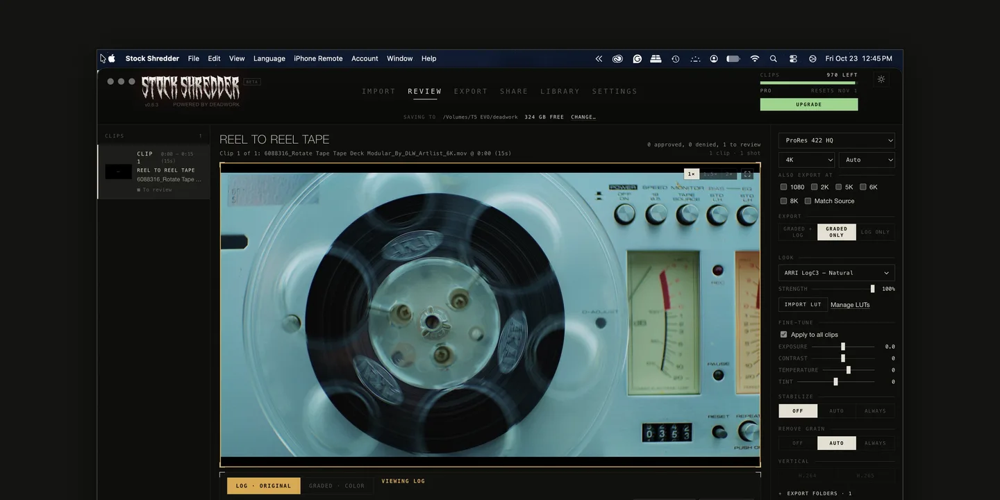

Stock Shredder · For Storyblocks contributors
How to Sell Footage on Storyblocks, Faster
Storyblocks pays from subscriptions, so a bigger library earns more. Here's what it accepts, and how to get more clips ready in less time.

The short version
- HD in a MOV. 4K in MOV or MP4. 8K in MP4.
- ProRes 422, or H.264 at 50 Mbps or more.
- Stay under 4 GB for HD and 6 GB for 4K.
- Remove the audio.
- Visible logos or brands: mark the clip editorial.
Stock Shredder trims, grades, exports, names and keywords the whole drive in one pass. 1,000 clips took 3 hours 1 minute in our test.
On Storyblocks, library size is the game.
Storyblocks pays contributors a share of subscription revenue, based on how often your clips get downloaded. More good clips in the library means more chances to be picked.
That makes prep time the bottleneck. At about 2 minutes a clip, a 500-clip drive is 16+ hours of trimming, grading, exporting and keywording.
Storyblocks' video rules.
| Check | Storyblocks |
|---|---|
| Length | Up to 3 minutes for footage |
| Container | HD: MOV. 4K: MOV, MP4 or R3D. 8K: MP4 |
| Codecs | ProRes 422 and 4444, DNxHD, Photo JPEG, H.264 at 50,000 kbps or more |
| Max file size | 4 GB HD, 6 GB 4K |
| Frame rates | 23.98, 24, 25, 29.97, 30, 48, 50, 59.94, 60 |
| Sizes | 720p up to 8K, horizontal and vertical |
| Audio | Usually not accepted |
| Logos and brands | Editorial only |
| Other | No interlacing, no watermarks, no duplicate resolutions |
Sources: Storyblocks submission requirements, how to sell your footage on Storyblocks, how to apply. Checked November 2026. Storyblocks changes these, so check before a big upload.
What's different about Storyblocks.
- You apply first. Storyblocks reviews a portfolio for quality and buyer demand. Reviews usually take a few days, sometimes weeks.
- Non-exclusive. You keep the copyright and can sell the same clips elsewhere.
- Longer clips allowed. Up to 3 minutes, though short single shots are what most buyers search for.
- One size per clip. Don't upload the same shot in HD and 4K.
- Big uploads. The web uploader takes 100 files at a time. sFTP is there for more.
Selling on Adobe Stock, Pond5 and Shutterstock too? The side-by-side is in How to Prepare Footage for Adobe Stock, Pond5 and Shutterstock.
The by-hand way.
- Scrub each file and set an in and out.
- Grade log to a light Rec 709.
- Export each clip as its own MOV, audio off.
- Name the file and its folder.
- Write a title and keywords.
- Mark anything with a logo as editorial.
Our average is about 2 minutes per clip, every clip.
The Stock Shredder way.
Point Stock Shredder at a folder of raw footage on your Mac or Windows computer.

- It finds the moments. Usable shots are found and trimmed inside the length you set.
- It checks. Logos, HDR, wrong frame rates and footage under 2K are flagged, so you know which clips are editorial.
- It grades. Built-in Looks for ARRI, DJI, RED and Sony, or your own LUT.
- It exports. Each clip its own ProRes MOV, the format Storyblocks wants for HD and takes for 4K.
- It names and keywords. Clean names, a folder per clip, and keywords ready to paste.

The time difference, measured.
Real Sony FX6 and FX3 footage on a MacBook Pro M3 Pro, exported to an external SSD as graded ProRes 422 HQ 4K.
100 clips
500 clips
1,000 clips
Stock Shredder time is shred plus export. Review time not included. By hand: 2 minutes per clip average.
What to know before you start.
Stock Shredder handles the repetitive parts. A few things stay with you.
- You review. It finds the usable shots. Your eye picks the ones worth adding to your library.
- You apply. Your portfolio gets you in. More finished clips make a stronger one.
- You upload. Names and keywords are ready, so 100-file batches go fast.
- Watch long 4K clips. Keep ProRes clips short and they stay under 6 GB.
When by hand still makes sense.
- Long clips, like a 2-minute timelapse, that you want to cut by eye.
- 8K delivery, which Storyblocks wants as MP4.
For a full drive, every clip needs the same steps. That's the part worth handing off.
FAQ
How do contributors get paid on Storyblocks?
Storyblocks shares a percentage of subscription revenue with contributors, based on how much of your content is downloaded compared with other contributors.
Is Storyblocks exclusive?
No. Storyblocks says video licensed through it is non-exclusive, you keep the copyright, and you can remove clips with 30 days' notice.
How long can a Storyblocks clip be?
Footage can be up to 3 minutes. Most stock buyers still look for 10 to 30 second clips.
What format does Storyblocks want?
HD has to be a MOV. 4K can be MOV, MP4 or raw R3D. 8K has to be MP4 in H.264 or HEVC. H.264 needs at least 50,000 kbps.
Can I include audio in Storyblocks clips?
In most cases, no. Storyblocks says content with audio usually won't be accepted.
How do I join Storyblocks as a contributor?
Apply with a portfolio at contribute.storyblocks.com. Storyblocks reviews it for quality and buyer demand and sends an offer to join if it fits.